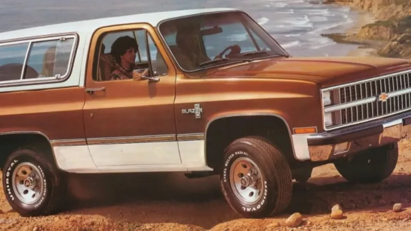
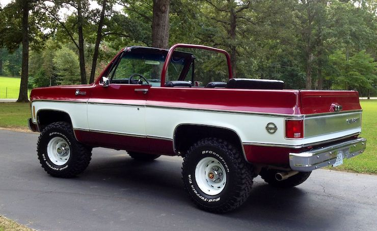
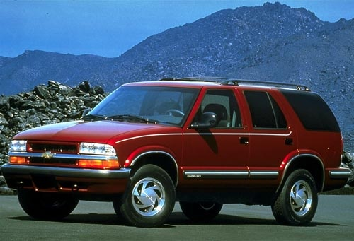
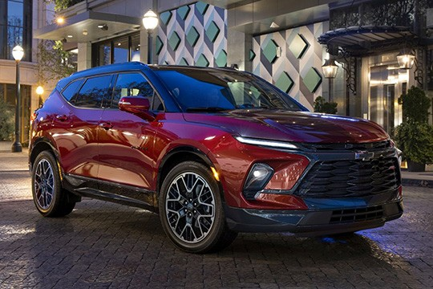

All Models
These are models from different years!
Early Model
This is the first model that was made. It was a great family vehicle when it came out. It was built to last.
Early Model
This is my overall favorite model blazer. The way it looks and how well it was made is what makes it my favorite. You can tell it i built for any terrain.
S-10 Model
This is the most compact model they made. It was a reliable vehicle at the time.
Newest Model
This is one of the most recent models of blazers. It is one of my personal favorites due to it's safety and technology.